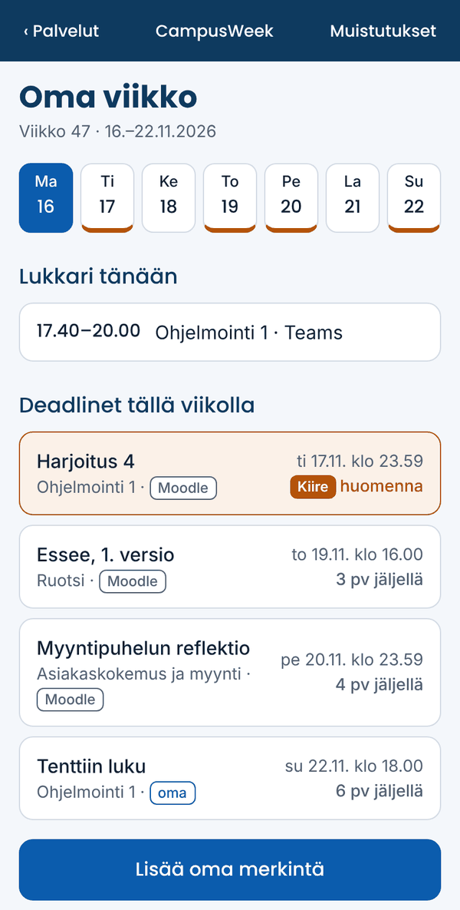

CampusWeek kokoaa viikon deadlinet yhteen näkymään
Missä se tehtävä piti palauttaa ja milloin? CampusConnectin uusi palvelu CampusWeek näyttää kaikkien kurssien deadlinet ja viikon lukkarin samassa paikassa, joten viikon voi suunnitella yhdellä silmäyksellä.
Tieto on hajallaan monessa paikassa
Palvelun idea syntyi opiskelijoiden haastatteluista. Kaikki haastatellut kertoivat samaa: tehtävät ja aikataulut ovat hajallaan Moodlessa, Pepissä ja sähköpostissa, ja jokainen kurssi on rakennettu vähän eri tavalla.
Varsinkin töiden ohella opiskelevalle tämä on raskasta. Kun opiskeluaikaa on vain iltaisin ja viikonloppuisin, sitä ei haluaisi käyttää deadlinejen etsimiseen.
Mitä CampusWeekillä voi tehdä?
CampusWeek ei korvaa Moodlea. Se on kevyt yhteenveto, joka kertoo mitä pitää tehdä seuraavaksi ja vie tekemään sen.
Ensimmäisessä versiossa voit
- nähdä viikon lukkarin ja deadlinet yhdessä näkymässä
- tunnistaa kiireelliset tehtävät Kiire-merkistä
- nähdä, tuleeko tieto Moodlesta vai onko merkintä oma
- lisätä omia merkintöjä, kuten tenttiin lukemisen
- päättää itse, mistä sinua muistutetaan

Testaajat: selkeämpi kuin Moodle
Palvelun prototyyppiä testattiin kolmella käyttäjällä. Opiskelijat osasivat käyttää sitä heti ilman ohjeita. Testien perusteella kiireellisiin tehtäviin lisättiin Kiire-merkki, koska pelkkä väri ei kertonut kiireestä kaikille.
”Näyttää paljon siistimmältä kuin Moodle.”
Kokeile itse
CampusWeek löytyy CampusConnectin palveluista. Ensimmäinen versio näyttää esimerkkidataa, ja kalenteritilaus on tulossa seuraavaan versioon.